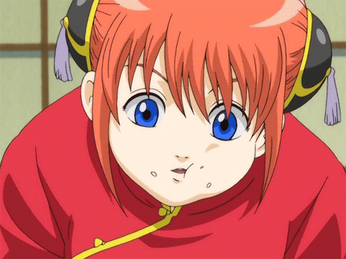

 Neemoy
Neeko M6 100K
Neeko M6 100K
Le Lore
Romane de son vrai nom, la cringeuse gloutonne de son surnom,
débuta sur la faille de l'invocateur il y'a peu
elle n'est pas ce qu'on pourrait appeller un bon joueur et elle le sait,
elle commença sur la faille avec la prêtresse lunaire au gameplay d'assasin : Diana
Puis elle s'est orienté vers le caméléon bi-sexuel au point de devenir une OTP neeko
mais vint un jour une illumination,
jamais elle ne devait toucher au classé au risque de ruiner le mmr de tout ses mates
Et maintenant elle compte bien atteindre les sommets accompagné de ses compagnons!